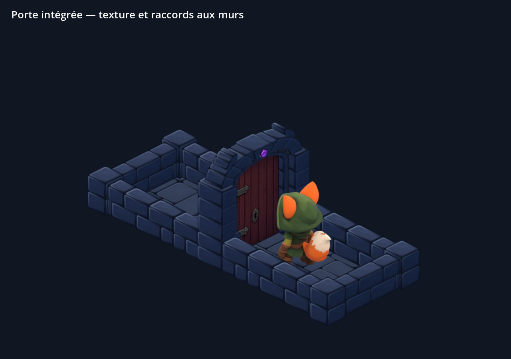
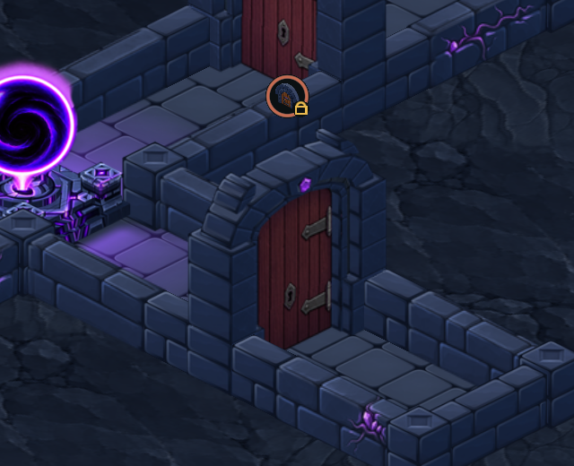
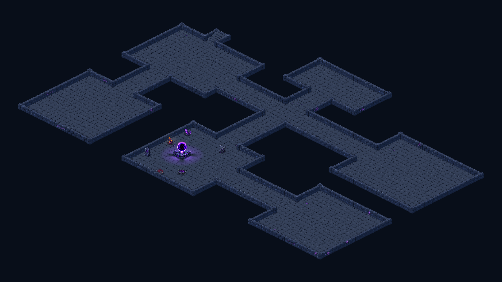

Porte compacte intégrée
Les proportions du wireframe validé sont conservées : montants dans l’alignement du mur, arche abaissée et ouverture adaptée au Vulpin. La texture ajoute les joints sombres, les gonds et une serrure à hauteur des outils.

Captures natives Godot du kit actif. Le cadre conserve exactement sa maçonnerie après déverrouillage. Seule la vue « Repères de contact » rend la porte transparente pour l’inspection.
La scène VulpinLockpick.tscn utilise maintenant les poses recalées et cette porte. Ouvrir la scène dans Godot puis F6 permet de tester les quatre orientations, la pause et la vitesse. Le jeu et les scènes de donjon utilisent le même kit de portes.
Rendu dans le jeu


Contrôles : quatre états orientés fermés/ouverts, contacts muraux, 40 vérifications d’ouverture et 87 de badges sans échec. Crochetage vérifié sur les huit poses et quatre tailles de fenêtre. Les 143 autres sprites du kit sont inchangés. Kit : +78 355 octets PNG, +1 Mio de textures décodées ; animation de crochetage : +3 193 octets PNG, mémoire inchangée.
Les portes déverrouillées affichent un cadre vide ; il n’y a pas d’animation de battant pivotant sur ses gonds. La validation est faite sur ordinateur, sans nouvel APK ni essai sur téléphone.
Wireframe validé · Contrôles du kit · Ouverture · Badges · Consigne ImageGen · Reproduction et limites